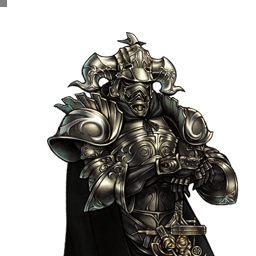

Final Fantasy XII
Gabranth
Charge son EX à la demande pour exploser en EX Mode
Position dans la méta
Tier B 20ᵉ sur 30 — tier list tournoi 2017 de dissidia.wiki (moitié valeurs de matchups, moitié avis de joueurs experts).
Le wiki rappelle qu'il a été considéré tantôt high tier, tantôt mid tier en jeu compétitif, avec des matchups très volatils.
Vue d'ensemble
Gabranth est un personnage unique dont tout le jeu tourne autour du remplissage de la jauge EX pour entrer rapidement en EX Mode. Hors EX Mode, c'est l'un des personnages les plus faibles du jeu : déplacement lent, frame data sous la moyenne, et il est le seul personnage dont les HP attacks ne peuvent pas infliger de dégâts HP. Sa stratégie en découle : remplir la jauge avec son HP attack EX Charge, distinct de tout ce qui existe ailleurs, tout en repoussant l'adversaire, puis déclencher l'EX Mode au moment choisi.
Une fois en EX Mode, Gabranth devient nettement plus fort : vitesse de déplacement, dégâts de bravery et priorité mid sont bien plus présents. Les bénéfices universels de l'EX jouent aussi en sa faveur, puisqu'il profite plus souvent que les autres des coups critiques, de la régénération de santé et de la depletion de la jauge d'assist adverse au fil du match. L'une de ses forces distinctives est sa capacité à survivre nettement plus longtemps que la plupart des personnages grâce à cette régénération.
Cette dépendance à l'EX exige du temps et de solides fondamentaux défensifs. Gabranth peut souffrir face à un rushdown efficace, à cause de ses air dodges flottants et d'un gain d'EX relativement lent entre les interactions. Ses HP attacks sont des outils de neutral peu efficaces contre les personnages très mobiles, et ses mixups ne sont pas les meilleurs de leur catégorie, même en EX Mode. Les conversions en dégâts HP demandent un assist (et souvent un Wall Rush), qu'il construit lentement. La durée limitée de l'EX Mode lui laisse une petite fenêtre pour faire ce que beaucoup de personnages font sans ses contraintes ; les joueurs capables de tenir leur position y trouveront néanmoins un personnage gratifiant, avec un rapport unique à l'économie de meter du jeu.
Forces
- Génération d'EX la plus rapide du jeu dès qu'il peut rester immobile quelques secondes.
- Grande capacité de survie contre les personnages défensifs grâce à la régénération de santé de l'EX Mode.
- Gros burst de dégâts via les critiques de l'EX Mode, l'assist et l'EX Burst.
- Les pièges Banish l'aident à charger son EX sans subir de gros revers.
- Seul personnage immunisé contre l'effet de bravery de l'EX Break (Jamming).
Faiblesses
- Lent, mixups faibles et dégâts bas hors EX Mode ; aucun HP attack offensif hors EX Mode ou Chase.
- Souffre contre le rushdown hors EX Mode : sous pression constante, il charge son EX lentement.
- Sa dépendance à l'EX Mode limite sa capacité à mettre la pression et à concrétiser.
- HP attacks et potentiel de mixup seulement moyens, même en EX Mode.
- Vitesse de construction de la jauge d'assist moyenne, même en EX Mode.
Stats & vitesses
| Nom | Gabranth (ガブラス) |
|---|---|
| Jeu d'origine | Final Fantasy XII |
| ATK de base (LV100) | 108 (Normal, Very Low) 112 (+4 in EX, Very High) |
| DEF de base (LV100) | 109 (Normal, Lowest) 112 (+3 in EX, High) |
| Vitesse de course | 12 (Normal, Very Slow)4 (EX, Fast) |
| Vitesse de dash | 85 (Normal, Slow) 73 (EX, Fast) |
| Vitesse de chute | 81 (Normal, Average) 67 (EX, Fast) |
| Chute après esquive | 34 (Normal, Above Avg.) 16 (EX, Very Fast) |
| BRV la plus rapide | 19F (Sentence, Rupture)15F (EX, Dual Rend & Enrage) |
| HP la plus rapide | 35F (EX, Hatred) |
| HP en 1 coup | Hatred, Innocence |
| HP links | No |
| Command block | EX Attack Magic Block |
| Armes | Swords, Daggers, Greatswords, Axes, Guns |
| Armures | Shields, Gauntlets, Helms, Light Armor, Heavy Armor, Large Shields |
| Armes exclusives | Demonsbane, Deathbringer, Chaos Blade |
| Camp | Chaos |
| Doubleur (JP) | Akio Ōtsuka |
| Doubleur (ENG) | Keith Ferguson |
Point or : ce personnage · petits points : le reste du cast · trait violet : moyenne. Valeurs du wiki, plus bas = plus rapide ; le rang à droite se lit directement (1ᵉʳ = le plus rapide).
Coups
Barre plus courte = coup plus rapide. Startup en frames (60 i/s, données dissidia.wiki), priorité indiquée après la valeur. Les coups marqués ★ sont les plus rapides du kit — ce sont en général vos meilleurs outils de punish et de pression.
Braveries
Au sol
Sentence (ground) Melee Low
| Dégâts de base | 14 (5, 2, 2, 6) |
|---|---|
| Startup | 19F |
| Type | Physical |
| Priorité | Melee Low |
| EX Force | 87 |
| Cancels | Dodge |
| CP (maîtrisé) | 20 (10) |
Lunge Melee Low
| Dégâts de base | 20 |
|---|---|
| Startup | 23F |
| Type | Physical |
| Priorité | Melee Low |
| EX Force | 60 |
| Cancels | Dodge, EX Charge |
| CP (maîtrisé) | 20 (10) |
Enrage Melee Low
Long combo au sol à startup rapide (15F), utilisé comme outil de punish (dodges, blocks, whiffs) grâce à son allonge, et assez rapide pour tenter des mixups avec Relentless Lunge de près. Jusqu'à quatre follow-ups manuels au bouton Circle, même sur whiff, ce qui le rend plus sûr en neutral et facilite le hit confirm en combo assist ; son fort knockback permet le Wall Rush. Les follow-ups peuvent être retardés pour prolonger l'EX Mode et régénérer plus de santé ; en l'air, il conclut surtout des combos après des assists qui plaquent au sol (Jecht, Yuna).
| Dégâts de base | 40 (3 x 8, 16) |
|---|---|
| Startup | 15F |
| Type | Physical |
| Priorité | Melee Low |
| EX Force | 24 |
| Effets | Wall Rush |
| Cancels | Dodge, Attack (follow-ups) |
| CP (maîtrisé) | 20 (10) |
Aero (ground) Ranged Low
Projectile persistant (~5,5 s) qui se dirige vers l'adversaire et mène au chase ; la version au sol est peu utilisée. Priorité Ranged Low : il perd contre blocks, dashes et mêlée, d'où un rôle de niche d'outil défensif passif pour construire la jauge d'assist, sûr contre les assist punishes mais faible face au rushdown. Il ne traverse pas les murs physiques et peut détruire des éléments de décor fragiles.
| Dégâts de base | 15 |
|---|---|
| Startup | 31F |
| Type | Magical |
| Priorité | Ranged Low |
| EX Force | 60 |
| Effets | Chase, Absorb |
| Cancels | Dodge |
| CP (maîtrisé) | 20 (10) |
Relentless Lunge Melee Mid
Gap closer Melee Mid au sol : trois ruées (follow-ups manuels au Circle, possibles même sur miss) avec une bonne hitbox horizontale et une re-visée automatique ; il stagger les blocks normaux et bat les pokes de priorité inférieure. Sur hit, les deux premières ruées ouvrent un combo assist et la troisième mène au chase, où Gabranth récupère les 90 d'EX générés avant de retenter un mixup. Mauvais anti-air et cantonné au sol, donc d'usage limité puisque Gabranth combat surtout en l'air.
| Dégâts de base | 35 (6, 9, 20) |
|---|---|
| Startup | 21F |
| Type | Physical |
| Priorité | Melee Mid |
| EX Force | 90 |
| Effets | Chase |
| Cancels | Dodge |
| CP (maîtrisé) | 20 (10) |
Gaia Breach Ranged Low
Projectile de mi-distance assez rapide au lancement comme en vol, utile pour punir landing lag et dodges au sol ; sur hit, mixup de chase ou dodge cancel vers un combo assist. Priorité low (blocable, traversable au dash) mais hitbox assez haute pour anti-air ; il peut servir de poke au sol secondaire si le matchup s'y prête.
| Dégâts de base | 20 (10, 10) |
|---|---|
| Startup | 31F |
| Type | Magical |
| Priorité | Ranged Low |
| EX Force | 90 |
| Effets | Chase |
| Cancels | Dodge |
| CP (maîtrisé) | 20 (10) |
En l’air
Sentence (midair) Melee Low
| Dégâts de base | 14 (5, 2, 2, 6) |
|---|---|
| Startup | 19F |
| Type | Physical |
| Priorité | Melee Low |
| EX Force | 87 |
| Cancels | Dodge EX Charge (On Hit) |
| CP (maîtrisé) | 20 (10) |
Circle of Judgment Melee Low
| Dégâts de base | 20 (1, 1, 18) |
|---|---|
| Startup | 23F |
| Type | Physical |
| Priorité | Melee Low |
| EX Force | 90 |
| Effets | Absorb |
| Cancels | Dodge, EX Charge |
| CP (maîtrisé) | 20 (10) |
Dual Rend Melee Low
Poke aérien principal : rapide (15F), récupération courte, bons dégâts et tracking vertical correct sur les deux coups. Les deux slashes sortent toujours, ce qui le rend un peu plus committal que des pokes comparables (Dayflash, Hop Step) ; le Wall Rush est sa principale voie de conversion en dégâts HP.
| Dégâts de base | 30 (10, 10, 10) |
|---|---|
| Startup | 15F |
| Type | Physical |
| Priorité | Melee Low |
| EX Force | 30 |
| Effets | Wall Rush |
| Cancels | Dodge |
| CP (maîtrisé) | 20 (10) |
Rupture Melee Low
Ruée verticale en diagonale, rapide et dotée du Wall Rush ; la direction (montée ou piqué) dépend de la position de l'adversaire. L'animation plus longue rend le whiff dangereux, mais c'est un très bon outil de punish air-to-ground ; comme Dual Rend, il faut Wall Rush et assist pour en tirer des dégâts HP.
| Dégâts de base | 30 (3, 3, 3, 5, 16) |
|---|---|
| Startup | 19F |
| Type | Physical |
| Priorité | Melee Low |
| EX Force | 30 |
| Effets | Wall Rush |
| Cancels | Dodge |
| CP (maîtrisé) | 20 (10) |
Aero (midair) Ranged Low
Fonctionnellement proche de la version au sol (~5,5 s, chase), avec plus d'occasions en l'air comme outil défensif passif pour la jauge d'assist : récupération courte, sûr en neutral à mi-distance, mais Ranged Low donc dangereux si prévisible. Son knockback (vertical et vers l'extérieur) peut être orienté par un reset de caméra pour garder l'adversaire au mur en combo assist : c'est sa seule route de combo solo aérienne. Pas une recommandation évidente comme troisième bravery aérienne d'EX Mode face à Vortex of Judgment et Dual Rend.
| Dégâts de base | 15 |
|---|---|
| Startup | 31F |
| Type | Magical |
| Priorité | Ranged Low |
| EX Force | 60 |
| Effets | Chase, Absorb |
| Cancels | Dodge |
| CP (maîtrisé) | 20 (10) |
Vortex of Judgment Melee Mid Block (Ranged Low)
L'une de ses braveries les plus importantes : attaque en trois temps avec bons dégâts de base, gros gain d'EX et priorité Melee Mid, qui punit les blocks et bat les pokes de priorité inférieure ; c'est son mixup aérien principal avec Dual Rend et les HP. Les follow-ups au Circle sortent même sur miss, se retardent pour la pression et se hit-confirment en combo assist ; le dernier coup mène au chase, ce qui absorbe l'EX Force au sol et rallonge son EX Mode. L'attaque aspire les adversaires proches et peut bloquer les attaques Ranged Low pendant la majorité de l'animation.
| Dégâts de base | 30 (3 x 3, 3 x 3, 3, 3, 6) |
|---|---|
| Startup | 23F |
| Type | Physical |
| Priorité | Melee Mid Block (Ranged Low) |
| EX Force | 84 |
| Effets | Magic Block, Chase, Absorb |
| Cancels | Dodge |
| CP (maîtrisé) | 20 (10) |
Attaques HP
Au sol
Execution Melee High Block (Ranged Low)
Estoc à courte portée suivi d'une explosion : seul HP de Gabranth à infliger des dégâts de bravery (20), appréciable avec le taux de critique accru de l'EX Mode. Bon finisher de combo assist au sol avec Jecht et Yuna, mais il ne punit pas fiablement les dodges au sol neutres ; il peut bloquer les attaques Ranged Low une fois les lames fusionnées.
| Dégâts de base | 20 |
|---|---|
| Startup | 41F |
| Type | Physical |
| Priorité | Melee High Block (Ranged Low) |
| EX Force | 90 |
| Effets | Magic Block, Absorb |
| Cancels | Dodge |
| CP (maîtrisé) | 30 (15) |
Innocence (ground) Ranged High Block (Ranged Low)
Barrage de projectiles à longue portée, aux longues frames actives et aux dégâts HP immédiats au contact : souvent une tentative de la dernière chance pour occuper l'espace et placer des dégâts HP. Gabranth reste totalement immobile et vulnérable par le haut ; les projectiles ne trackent pas une fois tirés et la visée reste imprécise. Peut bloquer les attaques Ranged Low lames fusionnées.
| Startup | 81F |
|---|---|
| Priorité | Ranged High Block (Ranged Low) |
| EX Force | 15 |
| Effets | Magic Block, Wall Rush |
| Cancels | Dodge |
| CP (maîtrisé) | 30 (15) |
En l’air
Hatred Melee High
HP 1-hit de mêlée incontournable : utilisé après avoir bloqué l'adversaire et comme finisher de combo assist, avec un Wall Rush orientable dans toutes les directions. Maintenable (Square) pour se déplacer et profiter de l'effet Absorb qui aspire les adversaires proches, sans gain de dégâts ni de hitbox ; frames actives courtes, donc punissable sur miss.
| Startup | 35F 15F after release (Charged) |
|---|---|
| Priorité | Melee High |
| EX Force | 30 |
| Effets | Wall Rush, Absorb |
| Cancels | Dodge |
| CP (maîtrisé) | 30 (15) |
Innocence (midair) Ranged High Block (Ranged Low)
Variante tirée vers le bas, sur environ une distance d'air dash : bien placée pour menacer les dodges proches (aériens comme au sol), mais la récupération longue rend le whiff risqué. Réservée au close-range et aux petits stages ; elle peut empiler la meter depletion en combo assist, et Gabranth peut se déplacer au stick pendant le startup. Peut bloquer les attaques Ranged Low lames fusionnées.
| Startup | 75F |
|---|---|
| Priorité | Ranged High Block (Ranged Low) |
| EX Force | 15 |
| Effets | Magic Block, Wall Rush |
| Cancels | Dodge |
| CP (maîtrisé) | 30 (15) |
EX Mode: Mist & EX Burst
L'EX Mode « Mist » cumule quatre effets : Regen, Critical Boost, Stray's Tenacity et Jamming. Stray's Tenacity, toujours actif en EX Mode, renforce stats et attaques : +4 ATK et +3 DEF.
Jamming est unique à Gabranth : après un EX Break subi, l'adversaire ne gagne pas la bravery du stage. Même s'il se fait toucher par un assist pendant son EX Mode, l'adversaire repart sans ce bonus — un filet de sécurité précieux pour un personnage censé passer beaucoup de temps en EX Mode.
EX Burst : Quickening enchaîne trois techniques Mist (Fulminating Oblivion, Ruin Unflinching, Frost Purge) à sélectionner en mélangeant avec R puis en validant avec Croix — une manipulation (R puis Croix répété à rythme régulier) garantit chaque étape, et le finisher dépend du nombre de Quickenings réussis (Inferno, Ark Blast ou Black Hole) sans changer les dégâts HP. Le Burst n'est pas particulièrement dévastateur, mais Gabranth y accède plusieurs fois par match et il suffit souvent à breaker un adversaire à basse bravery après un combo assist.
Mécanique unique
Gabranth ne peut normalement pas infliger de dégâts HP hors EX Mode. À la place, il remplit sa jauge EX à la demande avec un HP attack unique, EX Charge, qui ne génère aucune EX Force au sol : l'adversaire ne peut donc rien récupérer. Comme Gabranth a besoin de l'EX Mode pour libérer son potentiel, utiliser EX Charge est central dans son plan de jeu.
EX Charge existe en version au sol et aérienne. La différence principale est la vitesse : la version au sol remplit entièrement la jauge en 5,5 secondes (334F), la version aérienne en 8,3 secondes (500F). C'est le moyen le plus rapide d'atteindre la jauge pleine sans EX Cores, à utiliser dès que possible.
- Gabranth est vulnérable pendant la charge, mais la récupération est courte : EX Charge s'annule en dodge, en block ou en une autre attaque (EX Charge ou bravery).
- Enchaîner EX Charge en input tapé puis un dodge crée du déplacement sans subir toute l'animation de récupération, au sol comme en l'air.
- EX Charge ne remplit pas la jauge d'assist, mais l'empêche de se vider d'elle-même.
- En l'air, Gabranth descend lentement pendant la charge, qui s'arrête au contact du sol ; s'il active l'EX Mode pendant le mouvement, il descend beaucoup plus vite, conformément à ses stats d'EX Mode.
| Startup | ? | |
|---|---|---|
| EX Force | ? | |
| Cancels | Dodge, Block, Attack | |
| Assist Gain (Hit) | 0 | |
| CP (maîtrisé) | 30 (15) | |
| Charge EX Gauge by holding button. | Débloqué au niveau 1 | Maîtrisé à 150 AP |
| Startup | ? | |
|---|---|---|
| EX Force | ? | |
| Cancels | Dodge, Block, Attack | |
| Assist Gain (Hit) | 0 | |
| CP (maîtrisé) | 30 (15) | |
| Charge EX Gauge by holding button. Cancelled when you touch the ground. | Débloqué au niveau 1 | Maîtrisé à 150 AP |
Plan de jeu & techniques avancées
La boucle de jeu est simple sur le papier : charger la jauge avec EX Charge (au sol de préférence, 5,5 s contre 8,3 s en l'air) tout en repoussant l'adversaire, puis déclencher l'EX Mode au moment opportun. Hors EX Mode, la priorité est défensive : tenir sa position, utiliser Aero comme outil passif de construction d'assist et éviter de subir un rushdown qui gèlerait son gain d'EX.
En l'air, là où Gabranth combat le plus souvent, la pression s'articule autour de Dual Rend (poke), Vortex of Judgment (mixup mid priority, hit-confirmable) et des HP Hatred et Innocence ; au sol, Enrage et Relentless Lunge assurent punish et mixups. Les conversions en dégâts HP passent par l'assist et souvent le Wall Rush : Hatred après assist est le débouché le plus fiable, et Jecht ou Yuna permettent de conclure au sol avec Enrage ou Execution.
Le chase a une importance particulière : l'initier absorbe toute l'EX Force au sol, donc conclure Vortex of Judgment ou Relentless Lunge en chase prolonge directement l'EX Mode. Pendant celui-ci, les critiques gonflent les dégâts avant Hatred ou le Burst, la régénération allonge sa survie, et Quickening ajoute un burst de dégâts accessible plusieurs fois par match. Retarder les follow-ups d'Enrage en fin de jauge permet de grappiller encore quelques instants d'EX Mode.
Techniques spécifiques
EX Charge dodge chain
Enchaîner EX Charge en input tapé et un dodge crée du déplacement sans attendre la fin de l'animation de récupération. La version aérienne charge peu de cette façon, mais rend Gabranth plus difficile à toucher si elle est utilisée avec soin.
Delayed Enrage follow-ups
Quand la jauge EX est presque vide, retarder les follow-ups d'Enrage prolonge l'EX Mode et laisse la régénération rendre plus de santé.
Aero camera reset
Le knockback d'Aero (vertical et vers l'extérieur) suit l'angle de la caméra : la réinitialiser dans une autre direction permet, en combo assist, de garder l'adversaire au mur ou dans le coin au lieu de le repousser. C'est la seule route de combo solo aérienne de Gabranth.
Techniques universelles (blodge, dash feint, lock off, dodge punishment) : voir la page Techniques & glitches.
Matchups
Les matchups de Gabranth sont décrits comme particulièrement volatils. Son accès fréquent aux mécaniques EX est puissant contre les meilleures défenses du jeu, au point de le rendre très difficile à battre sur la durée.
À l'inverse, il souffre beaucoup contre les meilleures offenses, capables de le démanteler rapidement avant qu'il n'ait chargé sa jauge. La page matchups dédiée du wiki est à l'état d'ébauche : aucune analyse par personnage n'est disponible.
Vidéos de matchs : Replay Theater — matchs de Gabranth.
Builds
Un seul build est réellement documenté : « Hybrid (Soul of Yamato) », un build généraliste construit autour de l'effet spécial Soul of Yamato (Chaos Blade et set Genji complet), avec l'assist Jecht et l'invocation Rubicante. Le total de Capacity Points suppose l'utilisation de l'Equip Glitch, et l'extra ability Master Guardsman ajoute +1000 HP. Stats affichées : 11299 HP, 996 BRV, 176 ATK, 183 DEF, 63 LUK, booster max x2,1 pour 450 CP.
| Stats | |
|---|---|
| HP | 11299 |
| CP | 450 |
| BRV | 996 |
| ATK | 176 |
| DEF | 183 |
| LUK | 63 |
| Max Booster | x2.1 |
| Equipment | |
|---|---|
| Assist | Jecht |
| Weapon | Chaos Blade |
| Hand | Genji Shield |
| Head | Genji Helm |
| Body | Genji Armor |
| Accessory 1 | Hyper Ring |
| Accessory 2 | Muscle Belt |
| Accessory 3 | Silver Hourglass |
| Accessory 4 | Angel's Bell |
| Accessory 5 | EX Mode |
| Accessory 6 | Summon Unused |
| Accessory 7 | Opponent Summon Unused |
| Accessory 8 | Tenacious Attacker |
| Accessory 9 | Spider Web |
| Accessory 10 | Spider's Bane |
| Summon | Rubicante |
| Bravery attacks | |
|---|---|
| Ground | Aerial |
| HP attacks | |
| Ground | Aerial |
| Bravery attacks | |
|---|---|
| Ground | Aerial |
| HP attacks | |
| Ground | Aerial |
Le second emplacement de build de la page est entièrement vide (aucun équipement ni aucune stat renseignés).
Synergies d'assist
Gabranth en tant qu'assist
En tant qu'assist, Gabranth est classé Low dans la tier list assist de Muggshotter.
Ses coups d'assist apparaissent sur l'adversaire : Enrage (BRV, sol, 15F, Wall Rush), Aero (BRV, air, 31F, Chase), Execution (HP, sol, 41F, Chase) et Hatred (HP, air, 35F, Wall Rush).
Assists recommandées
- Kuja — Synergie citée par le wiki (« Gabranth fonctionne bien avec les assists Kuja et Jecht »), sans plus de détail.
- Jecht — Synergie citée par le wiki ; ses knockdowns permettent de conclure les combos au sol avec Enrage ou Execution, et c'est l'assist du build documenté.
- Yuna — Comme Jecht, ses knockdowns aériens ramènent l'adversaire au sol pour finir avec Enrage ou Execution.
Tech communautaire
Aero : knockback orienté par reset de caméra
Démonstration de l'influence du reset de caméra sur la direction du knockback d'Aero, base de sa seule route de combo solo aérienne.
Vortex of Judgment bloque les attaques Ranged Low
Démonstration de la propriété de block Ranged Low couvrant la majorité de l'animation de Vortex of Judgment.
Execution bloque les attaques Ranged Low
Démonstration du block Ranged Low d'Execution une fois les lames fusionnées.
Innocence (ground) bloque les attaques Ranged Low
Démonstration du block Ranged Low de la version au sol d'Innocence, lames fusionnées.
Innocence (midair) bloque les attaques Ranged Low
Démonstration du block Ranged Low de la version aérienne d'Innocence, lames fusionnées.
Sources
- https://dissidia.wiki/Gabranth_(Dissidia_012)
- https://www.youtube.com/watch?v=qUjhcyM5FwY
- https://www.youtube.com/watch?v=VzeDzz2oIiE?feature=shared&t=39
- https://www.youtube.com/watch?v=VzeDzz2oIiEVzeDzz2oIiE?feature=shared&t=7
- https://www.youtube.com/watch?v=VzeDzz2oIiE
- https://www.youtube.com/watch?v=VzeDzz2oIiE&t=91
- https://www.youtube.com/watch?v=VzeDzz2oIiE&t=39
- https://www.youtube.com/watch?v=VzeDzz2oIiE&t=7
- https://dissidia.wiki/Tier_List_(Dissidia_012)
- https://dissidia.wiki/Tier_List_(Assist)
Limites connues
- Section combos non documentée : l'onglet « Solo » de la page est vide.
- Page matchups dédiée à l'état d'ébauche (stub) ; seules les tendances générales de l'overview sont reprises ici.
- Section assist marquée non documentée : uniquement un tableau de données et une phrase de synergies (Kuja, Jecht).
- Deuxième emplacement de build entièrement vide dans les données.
- Valeurs manquantes dans les tables : gain d'assist des coups non renseigné, dégâts et EX Force d'EX Charge notés « ? ».